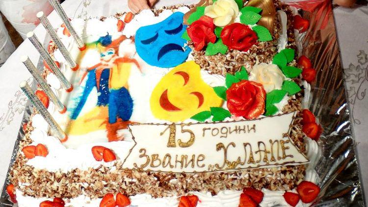

Честит рожден ден, "Хлапетa" :)
„Веднъж хлапе – завинаги хлапе“. Това е мотото на детска актьорска работилничка „Хлапета“, която тази година отбелязва 15 години от своето създаване. Създадена през 2001 година, ДАР „Хлапета“ постепенно се превръща в център на таланта. Деца от 4 до 18 години се събират, за да сътворят чрез изкуството един много по-красив и смислен свят.
В навечерието на своя рожден ден, „Хлапета“ ни поканиха да се присъединим към трескавата подготовка на празника. Разбира се, както му приляга, малките таланти отпразнуваха събитието на сцената на театър „Сълза и смях“. На входа ни посреща Ганди, която ни говори съвсем тихо, за да не пречи на театралния процес.
Ганета Атанасова не е просто творчески ръководител, тя е нещо по-различно и в това се убеждава всеки, който прекара повече от 3 минути около нея. Тя е извор на енергия и оптимизъм, а репетициите с нея са истинско духовно преживяване.
Актьорите от ДАР „Хлапета“ участват в над 70 игрални филми от българското и световното кино и сериали. Имената им се свързват със заглавия като „ Непобедимите“, „Спартак“, „Под прикритие“, „Столичани в повече“, а гласчетата им озвучават дублажите на „Цар Лъв“, „Търсенето на Немо“, „Хари Потър“ и безброй други ленти. Пожелаваме успех обрата новина. А тя е, че децата на България са талантливи. И май има бъдеще за нашата страна.